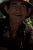

Country:United States, 109 minutes
Spoken languages:
Genres:Drama, Adventure, Thriller
Director(s):John Boorman
Writer(s):James Dickey, James Dickey
Video Codec:Unknown
Number: 2214


Certification:R
Storyline:
Intent on seeing the Cahulawassee River before it's turned into one huge lake, outdoor fanatic Lewis Medlock takes his friends on a river-rafting trip they'll never forget into the dangerous American back-country.
Cast: 


Medium: Original DVD,
Loaned: No
Aspect ratio: Unknown